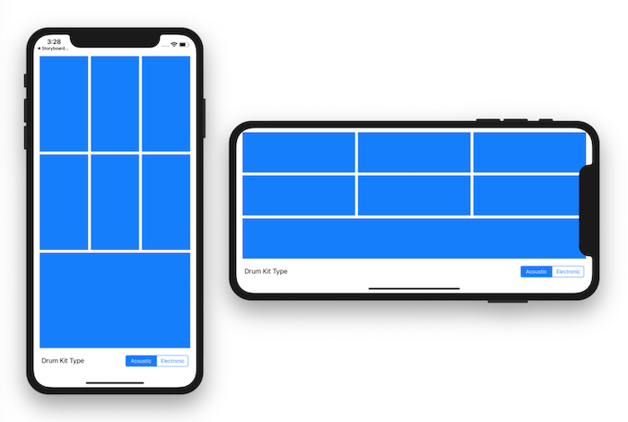

Open Terminal and navigate to the iosdecal-sp19 directory using cd.
Use git pull to fetch this lab's starter code.
In today's lab, we'll be creating a responsive UI for a simple drum pad app using AutoLayout and hooking up to code with MVC.
Open the file Drummer.xcodeproj to start the lab. We have provided the following files for you to use.
Drumkit.swift in the Model folder - this file contains the brains
of our app, including the filenames for the audio files that we'll be using, as well as a method for playing these audio files. You (probably) won't need to modify this file, but please read through it before starting the lab! It'll make understanding things much easier :)
DrummerViewController.swift in the Controller folder - this file contains the ViewController class that will connect our View created in Interface Builder to our Model. You will be adding code to this file in this lab.
Main.storyboard in the View folder - this is where you will be creating your UI elements (buttons, labels, etc) and AutoLayout constraints. This file is automatically created for you each time you start a new Xcode project.
Supporting Files - contains all the audio clips we'll be using, as well as some other files we won't be using in today's lab (Ask a TA if you want to learn about them!)
Good luck, and don't be afraid to ask other students in your group or the TAs for help if you're stuck!
Once you've familarized yourself with the starting files we've given you, open Main.storyboard to start with Storyboard.
We have a total of 7 drum sounds, so we'll need to create 7 UI Buttons in our storyboard. Create 7 buttons, and add them to your view in the arrangement below. Since we want each button to play a unique sound, give each button a unique integer tag from 0 to 6 (you can change a button's tag value using the Attributes Inspector, under View)
Let's add two more UI elements. Add one Label and one Segmented Control to the bottom of your view. We'll use these to switch between drum kits (different drum kits will have different sound files associated with them). Edit your UI Label to display Drum Kit Type
, and change the values of your Segmented Control to Acoustic
and Electronic
Try building your project now by pressing Command + R or the Run
button at the top left corner of Xcode. You'll see that the UI looks different than it does in the Interface builder, and that there is a lot of extra white space. You can rotate the simulator by pressing Hardware > Rotate to reveal some more UI issues. To fix these problems, let's use some AutoLayout!
For our app, we want to minimize the amount of whitespace by making the buttons as large as they possibly can be given the size of our screen. Instead of hard-coding in values for our buttons, we'll create constraints between each UI element.
You may add as many or as few constraints as you wish, but you must ensure the following to get credit for this lab:
Use the image below as a guide to make sure that you made your constraints correctly. Even though the screenshot only shows the UI for an iPhone XR, your app's UI elements should resize for any device size).

You are free to customize your UI however you'd like, as long as the constraint requirements listed above are satisfied.
Hint 1
To refresh your memory, you can create constraints in Storyboard by first clicking on a UI element, holding down Control and then dragging your cursor to another UI element or view. To fine-tune your constraints, open the Size Inspector in the Utilities pane. Scroll downwards to view all constraints on your UI element.
Hint 2
Don't forget about StackViews! They're great for displaying elements in a grid-like formation.
Now that you've finished the UI, we can now connect our View to our Model.
Now we can start connecting the UI elements we created in our Storyboard to our ViewController file so we can edit them programmatically.
Open the Assistant Editor so that Main.storyboard and DrummerViewController.swift are both open.
is the custom controller class associated with the view in DrummerViewControllerMain.storyboard. Usually, you will have to set each of your ViewController's custom classes in the Identity Inspector in Interface Builder on your own, but we have done this step for you.
Since we want our drum pad buttons to play an audio clip when pressed, we'll want to create an action in our ViewController that will be called each time the user taps a button. To do this, Control-Drag from one of your buttons to an empty line in DrummerViewController.swift. The Connection should be an Action, the sender type should be set to UIButton, and the function name should be set to
.drumButtonWasPressed
Note: We're setting the sender type to UIButton here (as opposed to leaving it on Any) because later on we're going to be using the tag property. If we don't set the sender type, Swift will get confused and throw an error because not all interactable elements have the tag property.
Since we want all of our buttons to activate this method (not just this one button we control + dragged from), connect all your other buttons to the IBAction drumButtonWasPressed
. Refer to the demo from last lecture if you need a reminder on how this works.
To check that all your buttons were successfully connected to the IBAction, hover over the small circle next to drumButtonWasPressed
in DrummerViewController.swift. All 7 buttons should appear highlighted in your Storyboard.
Now we have an action method that will be called any time a user taps one of the drum buttons. As of now, nothing will happen. Since we want a drum sound to be played each time a user taps a button, add some code to our new drumButtonWasPressed method to allow each button to play a different sound clip. If all buttons play the same sound clip, make sure you set the Tag
property for each button correctly in Part 1.
Hint
If you're stuck, take a look at DrumKit.swift in the Model folder. Perhaps there's a method implemented there you could call on in your controller?
Right now, we can't switch between drum kits (tapping on the segmented control doesn't change anything). To fix this create an IBAction in DrummerViewController.swift for the Segmented Control in the same way as done above. Set the sender type to UISegmentedControl. You can name the method whatever you like, but we'll call it
.drumKitWasChanged
Fill in the drumKitWasChanged method to allow the user to switch between drum kits by updating the currentDrumKit
variable. If you implemented the method correctly, tapping on the Segmented Control in your app should change the sound of each drum button.
Hint
You'll want to use your UISegmentedControl property selectedSegmentIndex, which you can access using sender.selectedSegmentIndex.
We will check off your work based off the following criteria (all requirements must be satisfied to receive credit).